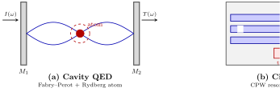
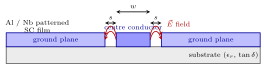
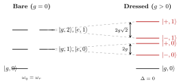
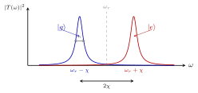

7 From cavity QED to circuit QED
Having built a transmon qubit in Ch. 5, we now need a way to (i) couple multiple qubits to each other for two-qubit gates, and (ii) read out the quantum state of each qubit non-destructively. Both capabilities are provided by coupling the qubit to a microwave resonator. Historically this strategy was first developed in atomic physics — cavity quantum electrodynamics (cavity QED), in which a real atom is trapped between two high-reflectivity mirrors — and then transposed almost line-by-line onto a superconducting chip, giving circuit QED. In both cases the goal is identical: confine a single electromagnetic mode in a small volume, place a single quantum emitter inside it, and reach a coupling so strong that the joint dynamics is coherent before either subsystem decays. The whole chapter is structured around one Hamiltonian — the Jaynes–Cummings (JC) model — and its two limiting regimes (resonant and dispersive), which respectively underlie two-qubit gates and qubit readout.
The fundamental light–matter coupling is the electric-dipole interaction \[ \hat H_{\text{int}} = -\hat{\mathbf d}\cdot \hat{\mathbf E}, \] where \(\hat{\mathbf d}\) is the electric dipole operator of the emitter and \(\hat{\mathbf E}\) is the quantised electric field of the resonator mode. To maximise \(\langle \hat H_{\text{int}}\rangle\), two ingredients must be made as large as possible simultaneously:
- a large electric dipole moment \(d\) of the emitter;
- a large electric field per photon \(E_{\text{vac}}\) in the resonator.
Cavity QED achieves the first by using Rydberg atoms and the second by using a Fabry–Perot resonator. Circuit QED achieves both at once with on-chip elements.
7.1 6.1 Cavity QED
In atomic cavity QED one typically uses Rydberg atoms: highly-excited alkali atoms in which the valence electron is promoted to a level with large principal quantum number \(n\). Their characteristic radius scales as \[ r_n \sim n^2 a_0, \] with \(a_0\) the Bohr radius, and the electric dipole moment scales as \[ d \sim e\,r_n \sim e\,n^2 a_0, \] so for \(n \sim 50\) the dipole moment is several thousand times larger than that of a ground-state atom. This solves ingredient (i).
The electromagnetic field is confined between two high-reflectivity mirrors, forming a Fabry–Perot resonator of length \(L\). Only standing-wave modes with an integer number of half-wavelengths fitting inside survive constructive interference: \[ L = m\,\frac{\lambda_m}{2}, \qquad m = 1,2,3,\dots \qquad\Longleftrightarrow\qquad \lambda_m = \frac{2L}{m}, \qquad \nu_m = \frac{mc}{2L}. \] The cavity therefore selects a discrete comb of modes \(\nu_1,\nu_2,\dots\), and the transmission spectrum displays peaks of width set by the leakage of photons through the mirrors. The narrower these peaks, the higher the quality factor \(Q = \omega_c/\kappa\) and the longer the photon storage time.
A photon stored in a small effective volume produces a large electric field; quantising the field mode gives the vacuum field amplitude \[ E_{\text{vac}} \sim \sqrt{\frac{\hbar\omega}{2\epsilon_0 V_{\text{mode}}}}. \] Reducing the mode volume \(V_{\text{mode}}\) therefore increases the electric field per photon — this is ingredient (ii).

7.2 6.2 Circuit QED
Circuit QED is the solid-state analogue of cavity QED. The atom is replaced by a superconducting artificial atom (e.g. a Cooper-pair box, a charge qubit or — as in modern devices — a transmon, Ch. 5), and the Fabry–Perot resonator is replaced by an on-chip microwave resonator.
| Cavity QED | Circuit QED |
|---|---|
| atomic atom | superconducting artificial atom |
| Rydberg atom | transmon qubit |
| Fabry–Perot cavity | coplanar-waveguide resonator |
| optical / microwave photons | microwave photons in a circuit |
| free-space dipole moment | lithographically engineered dipole |
| flying atoms | static, on-chip qubits |
Two consequences make circuit QED easier to push into the strong-coupling regime than its atomic ancestor:
- Huge effective dipole moment. A superconducting qubit is a macroscopic object, lithographically defined with dimensions of several micrometers. The dipole moment \(d \sim e\,\ell\) is therefore set by the lithographic length \(\ell\), not by the Bohr radius, and is orders of magnitude larger than even a high-\(n\) Rydberg atom.
- Small mode volume. A coplanar-waveguide resonator confines the field to a quasi-one-dimensional channel only a few micrometers wide; its effective volume is vastly smaller than that of a three-dimensional Fabry–Perot cavity, so \(E_{\text{vac}}\) is correspondingly large.
The product of the two — large \(d\) times large \(E_{\text{vac}}\) — gives the vacuum Rabi coupling \(g\) that we will quantify below.
7.2.1 6.2.1 Coplanar waveguide resonator
A coplanar waveguide (CPW) is a planar transmission line made of three coplanar superconducting strips patterned on an insulating substrate: a centre conductor of width \(w\) and two ground planes separated from it by two narrow gaps of width \(s\). The electromagnetic field is mostly confined in the gap region, where the transverse electric field is largest.

In summary, the transition cavity QED \(\to\) circuit QED enhances both ingredients of the dipole Hamiltonian (14) — large \(d\) and large \(E_{\text{vac}}\) — by purely engineering means. The result is that strong coupling \(g/\kappa, g/\gamma \gg 1\), which required heroic experiments with Rydberg atoms in the 1990s, is now routine on a chip.
7.3 6.3 Interaction between SC qubits and the transmission-line resonator
A concrete circuit-QED architecture (Fig. 3) places one or more transmon qubits in the gap between the centre conductor and the ground planes of a CPW resonator, at positions of maximal electric field. The qubit and the resonator are then coupled capacitively: a small coupling capacitor \(C_g\) bridges the resonator’s centre conductor to one transmon island.
Near its fundamental frequency \(\omega_r\) the resonator behaves as a parallel \(LC\) oscillator with effective inductance \(L\) and capacitance \(C\). From the Hamiltonian of the LC resonator (Ch. 3), the voltage across the \(LC\) circuit reads \[ \hat V_{LC} = V^0_{\text{rms}}\,(\hat a + \hat a^\dagger), \qquad V^0_{\text{rms}} = \sqrt{\frac{\hbar\omega_r}{2C}}, \] where \(V^0_{\text{rms}}\) is the rms voltage of the ground-state vacuum fluctuations. Because the centre-conductor / ground-plane separation can be made very small (\(b \sim 5\,\mu\text{m}\)), the rms electric field is huge: \[ E^0_{\text{rms}} = V^0_{\text{rms}}/b \sim 0.2\,\text{V/m}. \]
The full Hamiltonian of qubit + resonator + coupling reads \[ \hat H = \hat H_r + \hat H_q + \hat H_{\text{int}}, \] with the three pieces:
- Resonator: \(\hat H_r = \hbar\omega_r\,\hat a^\dagger\hat a\), a single harmonic mode.
- Transmon: \(\hat H_q = \hbar\omega_q\bigl(\hat b^\dagger\hat b + \tfrac12\bigr) - \dfrac{E_C}{2}\,\hat b^\dagger\hat b^\dagger\hat b\hat b\), a weakly anharmonic oscillator (Ch. 5).
- Capacitive coupling: \(\hat H_{\text{int}} = -\hbar g\,(\hat b^\dagger - \hat b)(\hat a^\dagger - \hat a)\).
The coupling term comes directly from elementary circuit theory: a capacitor stores energy \(H \propto QV\), where \(Q\) is the charge on one of its plates and \(V\) the voltage drop across it. In the present case \(V\) is the resonator voltage and \(Q\) is the charge fluctuating on the transmon island. After quantisation, \[ \hat V_r \propto (\hat a^\dagger - \hat a), \qquad \hat n \propto (\hat b^\dagger - \hat b), \] so that \[ \hat H_{\text{int}} \propto (\hat b^\dagger - \hat b)(\hat a^\dagger - \hat a), \] with the proportionality constant collecting the coupling capacitance \(C_g\) and the zero-point voltage fluctuations \(V^0_{\text{rms}}\) of the resonator. Physically, \(\hat H_{\text{int}}\) describes the exchange of excitations between the microwave resonator and the artificial atom: a photon can be absorbed by the qubit and re-emitted into the field.
7.4 6.4 Jaynes–Cummings Hamiltonian
We now make two successive approximations on \(\hat H = \hat H_r + \hat H_q + \hat H_{\text{int}}\) that lead to the Jaynes–Cummings (JC) Hamiltonian, the fundamental model of cavity / circuit QED.
7.4.1 6.4.1 Rotating-wave approximation
Expanding the interaction term gives four contributions: \[ \hat H_{\text{int}} = \hbar g\Bigl(\hat b^\dagger \hat a^\dagger \;+\; \hat b\,\hat a \;-\; \hat b^\dagger\,\hat a \;-\; \hat b\,\hat a^\dagger\Bigr). \] To identify which of these are physically important, move to the interaction picture with respect to the uncoupled Hamiltonian \(\hat H_0 = \hat H_r + \hat H_q\). There the bare operators acquire trivial harmonic time-dependences \[ \hat a(t) = \hat a\, e^{-i\omega_r t}, \quad \hat a^\dagger(t) = \hat a^\dagger\, e^{+i\omega_r t}, \quad \hat b(t) = \hat b\, e^{-i\omega_q t}, \quad \hat b^\dagger(t) = \hat b^\dagger\, e^{+i\omega_q t}, \] and the interaction Hamiltonian becomes \[ \hat H_{\text{int}}(t) = \hbar g\Bigl(\hat b^\dagger \hat a^\dagger\, e^{+i(\omega_q+\omega_r)t} \;+\; \hat b\,\hat a\, e^{-i(\omega_q+\omega_r)t} \;-\; \hat b^\dagger\,\hat a\, e^{+i(\omega_q-\omega_r)t} \;-\; \hat b\,\hat a^\dagger\, e^{-i(\omega_q-\omega_r)t}\Bigr). \]
Two kinds of terms appear:
- Co-rotating (\(\hat b^\dagger\hat a\) and \(\hat b\,\hat a^\dagger\)): oscillate slowly at the detuning \(\omega_q - \omega_r\). Near resonance (\(\omega_q \approx \omega_r\)) they are quasi-static and dominate the dynamics. They conserve the total number of excitations: one quantum is exchanged between qubit and resonator.
- Counter-rotating (\(\hat b^\dagger\hat a^\dagger\) and \(\hat b\,\hat a\)): oscillate at the sum frequency \(\omega_q + \omega_r\). They would create or destroy two excitations simultaneously, violating energy conservation near resonance.
After dropping the fast-oscillating terms and a sign convention, the interaction reduces to \[ \hat H_{\text{int}}^{\text{RWA}} = \hbar g\bigl(\hat b^\dagger\,\hat a + \hat b\,\hat a^\dagger\bigr), \] which manifestly conserves the total excitation number \(\hat N = \hat a^\dagger\hat a + \hat b^\dagger\hat b\).
7.4.2 6.4.2 Two-level approximation
The transmon is not a true two-level system: it is a weakly anharmonic oscillator with anharmonicity \(-E_C/2\) (Ch. 5). However, provided one drives the system on or near the \(|g\rangle\!\to\!|e\rangle\) transition with frequencies far detuned from the next-level \(|e\rangle\!\to\!|f\rangle\) transition, the higher levels can be safely ignored. Restricting the transmon to its two lowest levels amounts to the replacement \[ \hat b^\dagger \longrightarrow \hat\sigma_+, \qquad \hat b \longrightarrow \hat\sigma_-, \] together with the qubit Hamiltonian \(\hat H_q \to \tfrac12 \hbar\omega_q\,\hat\sigma_z\) (up to an irrelevant additive constant). The full Hamiltonian then collapses onto the celebrated Jaynes–Cummings model: \[ \boxed{\; \hat H_{\text{JC}} \;=\; \hbar\omega_r\,\hat a^\dagger\hat a \;+\; \tfrac12\hbar\omega_q\,\hat\sigma_z \;+\; \hbar g\bigl(\hat a^\dagger\hat\sigma_- + \hat a\,\hat\sigma_+\bigr). \;} \]
7.5 6.5 Regimes of the Jaynes–Cummings Hamiltonian
The qualitative behaviour of \(\hat H_{\text{JC}}\) depends on the relative size of the coupling \(g\) and the detuning \[ \Delta \equiv \omega_q - \omega_r. \] We start by classifying the eigenstates in the absence of coupling and then turn on \(g\).
7.5.1 Bare eigenstates (\(g=0\))
When \(g=0\), \(\hat H_{\text{JC}}\) reduces to \(\hat H_r + \hat H_q\) and its eigenstates are product states \[ |g,n\rangle = |g\rangle\otimes|n\rangle, \qquad |e,n\rangle = |e\rangle\otimes|n\rangle, \] labelled by the qubit state \(\in\{|g\rangle,|e\rangle\}\) and the photon Fock number \(n=0,1,2,\dots\). The bare energies read \[ E_{g,n} = n\hbar\omega_r - \tfrac12\hbar\omega_q, \qquad E_{e,n} = n\hbar\omega_r + \tfrac12\hbar\omega_q. \]
Because \(\hat H_{\text{JC}}\) commutes with the total excitation number \(\hat N = \hat a^\dagger\hat a + \hat\sigma_+\hat\sigma_-\), the dynamics decomposes into invariant two-dimensional subspaces \[ \mathcal H_n = \mathrm{span}\bigl\{|g,n+1\rangle, |e,n\rangle\bigr\}, \] each containing \(n+1\) excitations. The interaction couples only these two states inside each \(\mathcal H_n\).
7.5.2 6.5.1 Resonant regime (\(\omega_q = \omega_r\))
In the resonant case \(\Delta = 0\) the two bare states \(|g,n+1\rangle\) and \(|e,n\rangle\) have identical energies \[ E_{g,n+1} = (n+1)\hbar\omega_r - \tfrac12\hbar\omega_q \;=\; n\hbar\omega_r + \tfrac12\hbar\omega_q = E_{e,n}. \] The bare levels are therefore degenerate, and any non-zero coupling lifts the degeneracy.
In the subspace \(\{|g,n+1\rangle,\,|e,n\rangle\}\), projecting \(\hat H_{\text{JC}}\) gives the \(2\times2\) matrix \[ H_n = \begin{pmatrix} (n+1)\hbar\omega_r - \tfrac{\hbar\omega_q}{2} & \hbar g\sqrt{n+1} \\[2pt] \hbar g\sqrt{n+1} & n\hbar\omega_r + \tfrac{\hbar\omega_q}{2} \end{pmatrix}, \] where the off-diagonal element follows from the bosonic raising rule \[ \hat a^\dagger\hat\sigma_-\,|e,n\rangle = \sqrt{n+1}\,|g,n+1\rangle. \] Diagonalising at resonance gives the dressed-state energies \[ \boxed{\; E_{n,\pm} \;=\; \hbar\omega_r\Bigl(n+\tfrac12\Bigr) \;\pm\; \hbar g\sqrt{n+1} \;} \] with eigenvectors \[ |+,n\rangle = \frac{1}{\sqrt 2}\bigl(|g,n+1\rangle + |e,n\rangle\bigr), \qquad |-,n\rangle = \frac{1}{\sqrt 2}\bigl(|g,n+1\rangle - |e,n\rangle\bigr). \]
These are entangled qubit–photon states: the qubit is no longer in a definite \(|g\rangle\) or \(|e\rangle\), nor is the field in a definite Fock state — they share one excitation coherently. They are the dressed states of the JC model, and the splitting between them is \[ \Delta E_n = E_{n,+} - E_{n,-} = 2\hbar g\sqrt{n+1}. \]
Dynamically, an excitation initially localised on the qubit (\(|e,n\rangle\)) oscillates back and forth into the cavity (\(|g,n+1\rangle\)) at the quantum Rabi frequency \(2g\sqrt{n+1}\). These coherent oscillations are the analogue of classical Rabi oscillations, but driven by a quantised field — and they form the basis of two-qubit gates: bringing two qubits into resonance with a common bus resonator generates an iSWAP-type interaction in their joint two-excitation subspace.

7.5.3 6.5.2 Dispersive regime (\(|\Delta| \gg g\))
The opposite limit, \(|\Delta| \gg g\), is the dispersive regime. The bare states \(|g,n+1\rangle\) and \(|e,n\rangle\) are now far from degenerate, and direct (real) photon exchange is energetically forbidden: the qubit and the resonator no longer swap excitations on a coherent timescale. However, virtual processes — in which an excitation is briefly absorbed and re-emitted within an energy uncertainty \(\sim\hbar\Delta\) allowed by the Heisenberg time–energy inequality — still produce measurable second-order energy shifts.
To derive the effective Hamiltonian, one can apply second-order perturbation theory inside each \(\mathcal H_n\) subspace (or equivalently a Schrieffer–Wolff / dispersive unitary transformation \(\hat U = \exp[\,(g/\Delta)\,(\hat a\hat\sigma_+ - \hat a^\dagger\hat\sigma_-)\,]\)). The off-diagonal coupling element \(\hbar g\sqrt{n+1}\) between two states separated by an energy denominator \(\hbar\Delta\) shifts each level by \[ \delta E_{\pm} \;\simeq\; \pm\, \frac{|\hbar g\sqrt{n+1}|^2}{\hbar\Delta} \;=\; \pm\,\hbar\,\frac{g^2(n+1)}{\Delta} \;=\; \pm\hbar\,\chi(n+1). \] Applied carefully to both \(|e,n\rangle\) and \(|g,n\rangle\) (the latter is shifted down by virtual coupling to \(|e,n-1\rangle\)), the perturbed energies become, to second order in \(g/\Delta\), \[ E_{g,n} \simeq n\hbar\omega_r - \tfrac12\hbar\omega_q - n\hbar\chi, \qquad E_{e,n} \simeq n\hbar\omega_r + \tfrac12\hbar\omega_q + (n+1)\hbar\chi. \]
Rewriting this level structure as a Hamiltonian operator we obtain the dispersive Hamiltonian: \[ \boxed{\; \hat H_{\text{disp}} \;\approx\; \hbar\omega_r\,\hat a^\dagger\hat a \;+\; \tfrac12\hbar(\omega_q + \chi)\,\hat\sigma_z \;+\; \hbar\chi\,\hat a^\dagger\hat a\,\hat\sigma_z, \qquad \chi = \frac{g^2}{\Delta}. \;} \] This effective Hamiltonian is the workhorse of circuit-QED experiments. It is exact to second order in \(g/\Delta\) and has two strikingly useful physical consequences.
1. Qubit-state-dependent cavity frequency. Grouping the photon-number terms gives \[ \hat H_{\text{disp}} = \hbar(\omega_r + \chi\hat\sigma_z)\,\hat a^\dagger\hat a + \tfrac12\hbar(\omega_q+\chi)\hat\sigma_z. \] The cavity frequency is pulled by the qubit state: \[ \omega_r \to \omega_r - \chi \quad\text{(qubit in }|g\rangle\text{)}, \qquad \omega_r \to \omega_r + \chi \quad\text{(qubit in }|e\rangle\text{)}. \] Probing the cavity transmission with a weak microwave tone at \(\omega_r\) therefore yields two well-separated Lorentzian peaks centred at \(\omega_r \pm \chi\), one for each qubit state — provided that the linewidth \(\kappa\) satisfies \(2\chi \gtrsim \kappa\) (resolved-peak condition). This is the basis of the dispersive readout introduced by Wallraff et al. (2004) and now standard in all superconducting-qubit platforms: a single transmitted microwave pulse reveals the qubit state without exciting it (a true quantum non-demolition measurement).
2. Photon-number-dependent qubit frequency. Grouping the \(\hat\sigma_z\) terms instead gives \[ \omega_q \to \omega_q + \chi(2n+1), \] so each photon shifts the qubit transition frequency by \(2\chi\) — the AC Stark shift. Even in the vacuum (\(n=0\)) a residual shift of \(\chi\) remains: this is the Lamb shift induced by vacuum fluctuations on the qubit, the on-chip analogue of the original 1947 Lamb shift in hydrogen.

7.6 Summary and outlook
The Jaynes–Cummings Hamiltonian, derived in three lines (full coupling \(\to\) RWA \(\to\) two-level), captures essentially all of cavity / circuit QED. Its two limiting regimes split the use cases of circuit QED into two distinct experimental missions:
- Resonant regime (\(\omega_q = \omega_r\)) \(\to\) vacuum Rabi oscillations, dressed states, two-qubit gates mediated by a bus resonator (Ch. 5 transmon couplings).
- Dispersive regime (\(|\Delta| \gg g\)) \(\to\) state-selective cavity pull \(\chi = g^2/\Delta\), AC Stark + Lamb shifts, dispersive QND readout.
These same ideas underlie the foundational circuit-QED experiments collected in the course’s project reading list: Wallraff et al. (2004) demonstrated strong coupling and dispersive readout on a chip; Schuster et al. (2007) used the photon-number-resolved AC Stark shift to count cavity photons; Paik et al. (2011) pushed coherence times into the \(T_1 \sim 100\,\mu\text{s}\) regime with 3D cavities. The dispersive Hamiltonian also underpins more recent quantum-non-demolition photon-detection schemes (Johnson 2010, Kono 2018) that students may study in the projects.
7.7 Sources
- Lecturer’s notes (Braggio 2026), §6.1–6.5, pp. 24–30.
- Wallraff, A. et al. Strong coupling of a single photon to a superconducting qubit using circuit quantum electrodynamics. Nature 431, 162 (2004). —
projects/selection of research papers/superconducting qubits/Wallraff2004_*.pdf. - Schuster, D. I. et al. Resolving photon number states in a superconducting circuit. Nature 445, 515 (2007). —
projects/selection of research papers/superconducting qubits/Schuster2007_*.pdf. - Paik, H. et al. Observation of high coherence in Josephson junction qubits measured in a three-dimensional circuit QED architecture. Phys. Rev. Lett. 107, 240501 (2011). —
projects/selection of research papers/superconducting qubits/Paik_2011_*.pdf. - Blais, A., Grimsmo, A. L., Girvin, S. M. & Wallraff, A. Circuit quantum electrodynamics. Rev. Mod. Phys. 93, 025005 (2021). — comprehensive modern review.
- Haroche, S. & Raimond, J.-M. Exploring the Quantum: Atoms, Cavities, and Photons. Oxford University Press (2006). — standard cavity-QED reference.